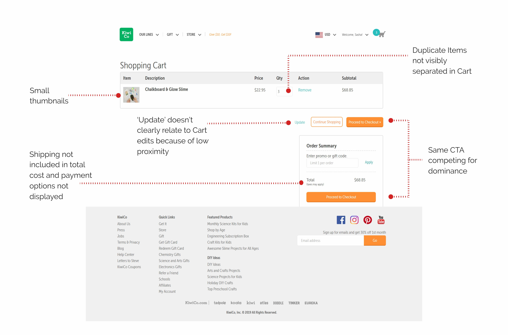

Design Roles
Sole Designer
- UX Design
- Product Management
Duration
- 3 days
Deliverables
- Mini Spec Sheet
- Wireframes
- Success Metrics
- Presentation
Tools & Software
- Figma
- Microsoft Excel
KiwiCo
The Problem
As part of my final stage interview for KiwiCo, I was tasked with redesigning their cart page based on current data on their sales conversion rate and cart abandonment ratings.
The Process
My process can be broken down into three phases:

Design Solution
Based on customer feedback, I identified opportunities to decrease cart abandonment rates by providing temporary storage capabilities, descriptive phrases for CTA, automating the update process, and simplifying the editing process within the cart.
Literature Review
Baymard Institute has indicated that the average site can increase its conversion rate by 35.26% solely through better checkout design.
A quantitative study revealed that 23% of all US online shoppers have abandoned orders in the past solely because they weren’t given an upfront estimate of the total order cost.
72% of sites don’t equip users very well for saving items
User Research
Based on the data and literature review, I identified key assumptions that were being made in the current design and structured user interviews to address whether they were correct. I conducted one-on-one interviews with two current customers of the site and two individuals who expressed interest in potentially making a purchase on the site. Users were sourced through social media platforms.
Using the Cart
I like to put everything [I like] in my cart and save items for later.
What does upgrade mean?
The ambiguity behind contextual descriptions for CTA proved especially confusing for second-language learners as can be seen in this question posed by an interviewee when trying to 'update' their cart.
Efficiency
I’m an ‘on-a-whim person’ so I shop pretty quickly. So I’ll either look somewhere else or I’ll forget about it.
I wish PayPal was an option.
While Paypal was an option during the checkout process, users visiting the cart were given no awareness of this as one interviewee addressed.
After having users browse and add inventory to their shopping carts, I created a customer journey map to identify areas where users felt confusion or frustration about the checkout funnel.
From the interviews, I was able to identify key archetypes that I relied on to ensure I was solving key pain points. These archetypes also allowed me to connect with users on a more emotional level by empathizing with their perceptions and values.
Wireframes
After developing the key pain points for users within the 3 archetypes, I developed potential solutions and prioritized them using the Moscow Method. Items to target first included:
Cart as Temporary Storage and Omnichannel Capabilities:For users who commonly browse and add items to their cart for comparison later, if they would prefer to save an item, they are instead given two polarizing options: buy now or delete.
As a browser, this user was also more likely to switch across different devices to complete orders. As suggested above, taking advantage of omnichannel capabilities by having users save their carts via email could be beneficial to this target group.
Separate Identical Items: To make the cart more skimmable, identical items should be displayed separately to protect against user error.
Automatic Updates:Currently the site has a two-step process for users to edit items in their cart. In usability tests, half of users were unable to successfully complete this task, risking error in the checkout process. Automating this process will help reduce friction in the funnel.
Total Cost Not Important: Given that many users take advantage of promotion codes for free shipping, I determined that prioritizing total cost in the cart wouldn't have high impact on cart abandonment for phase 1.
Old Cart
New Cart
Metrics & Prototype
Using the HEART framework, I looked into both reporting and exploratory metrics that could be used to determine the success of these initiatives:
Reporting Metrics
- Net Promoter Score (NPS)
- Average Order Value
- Sales Conversion Rate
- % of New Users → Customers
- Cart Abandonment Rate
Exploratory Metrics
- Number of visits to sale
- Heat maps and click data
- Time spent in checkout process
- Email opt-ins by tactic
Final Thoughts
This particular design challenge was very interesting. Using my design background, I approached the PM challenge from the perspective of the user, qualifying data with actual customer interviews. At the same time, it challenged me to intentionally consider what would constitute success and what success could look like from a data perspective.